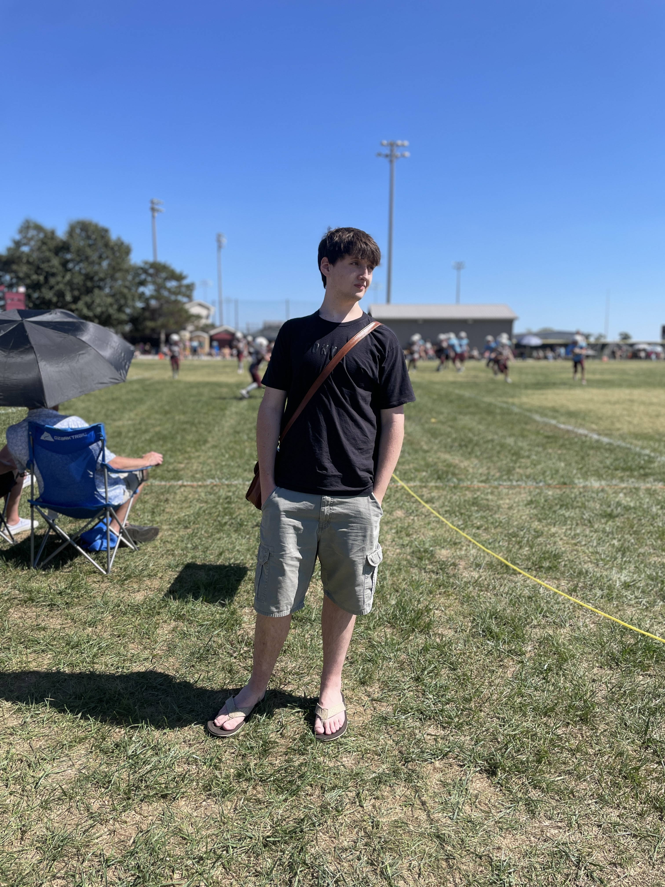

About Me

My Name is Grant Arbuckle. I have been a student at Gibson Southern High School for all of my high school career; I graduate in May of 2027.
I enjoy gaming, programming, cybersecurity, cooking, and traveling.
Most of my free time is spent tackling assignments during the school year; during summer I typically work Tuesdays, Wednesdays, and weekends.
My emphasis is on backend development but I am comfortable with both front and backend development.
I play the tenor saxophone in the Gibson Southern High School Advanced Concert Band and have been in band since fifth grade.
FUN FACT: I was chosen in my freshman year to travel with a few other classmates from my school to visit Princeton, Indiana's sister city: Tahara-Shi, Aichi, Japan!
Work
I am currently employed as a Financial Services Team Associate at Wal-Mart. This job brings a lot of enjoyment for me as I get to assist customers with key financial inquiries and have many different complex responsibilites.
My job is quite enjoyable, I was formerly a cashier but due to a change in the management hierarchy was promoted and now find myself looking forward to work.
It takes a vigilant eye, diligent mind, and a perservering will, but I am unwavering and dedicated to completing whatever job I have to the best of my ability.
Summary
- I am:
- Hard-working
- Passionate in my endeavors
- Problem-solving
- Curious
- Always ready to try new things
| Likes | Dislikes |
|---|---|
| Python | Turtle-GUI Python |
| SQL | Block-Based Coding |
| Cooking | Cold Weather |
| Traveling | Hot Weather |
| Gaming | Not knowing |